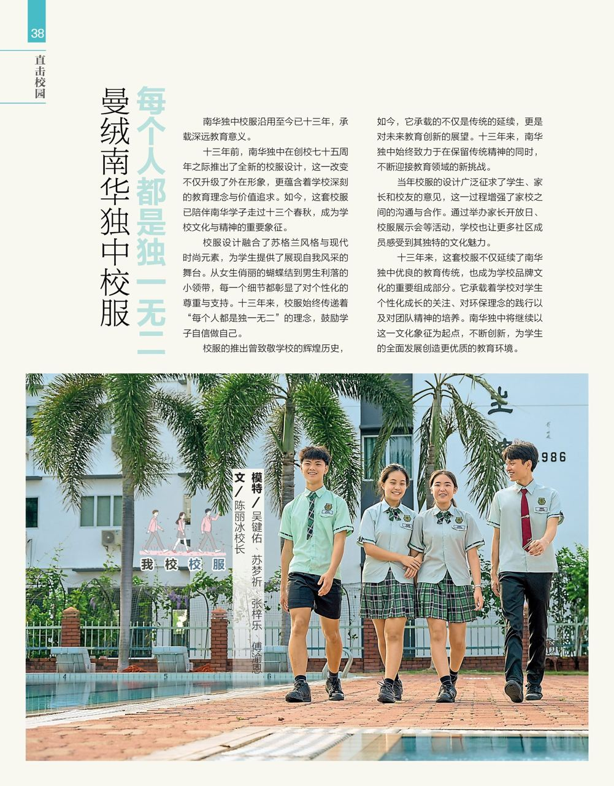

《学海》季刊 No.4 2025 1月
《学海》季刊 No.4 2025 1月
曼绒南华独中校服
每个人都是独一无二
南华独中校服沿用至今已十三年，承载深远教育意义
十三年前，南华独中在创校75周年之际推出了全新的校服设计，这一改变不仅升级了外在形象，更蕴含着学校深刻的教育理念与价值追求。如今，这套校服已陪伴南华学子走过十三个春秋，成为学校文化与精神的重要象征。
新校服推出之初便被视为学校品牌建设的核心举措之一。十三年来，它始终传递着学校“培养全面发展的人才”这一宗旨。通过独具匠心的设计，校服在强化学生对学校的认同感与归属感的同时，也让每位学生自豪地成为校园文化的代言人。穿上校服，学生不仅展示了身份，更承载着身为南华一员的骄傲与责任。
个性化表达与价值体现
校服设计融合了苏格兰风格与现代时尚元素，为学生提供了自我风采的舞台。从女生俏丽的蝴蝶结到男生利落的小领带，每一个细节都彰显了对个性化的尊重与支持。十三年来，校服始终传递着“每个人都是独一无二”的理念，鼓励学子自信做自己。
环保与可持续发展的践行
在材料选用上，校服注重环保与可持续发展，将绿色理念融入学生的日常生活中。校服不仅体现了对环境保护的关注，更是学校教育理念的延伸——培养学生从小关注社会责任，以实际行动践行可持续发展的理念。
团队精神与集体荣誉感的凝聚
统一校服的设计为学生带来了更强的集体荣誉感和团队意识。十三年来，无论是在课堂、运动场，还是社会活动中，校服始终帮助学生凝聚团队精神，培养合作能力，推动他们成长为更具责任感的社会公民。
历史致敬与未来展望
校服的推出曾致敬学校的辉煌历史，如今，它承载的不仅是传统的延续，更是对未来教育创新的展望。十三年来，南华独中始终致力于在保留传统精神的同时，不断迎接教育领域的新挑战。
校服设计背后的共建过程
当年校服的设计广泛征求了学生、家长和校友的意见，这一过程增强了家校之间的沟通与合作。通过举办家长开放日、校服展示会等活动，学校也让更多社区成员感受到其独特的文化魅力。
十三年来，这套校服不仅延续了南华独中优良的教育传统，也成为学校品牌文化的重要组成部分。它承载着学校对学生个性化成长的关注、对环保理念的践行以及对团队精神的培养。南华独中将继续以这一文化象征为起点，不断创新，为学生的全面发展创造更优质的教育环境。
